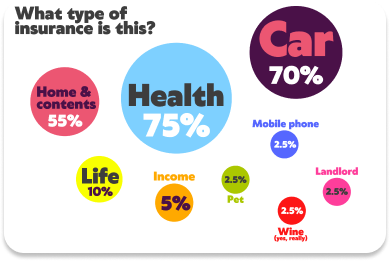
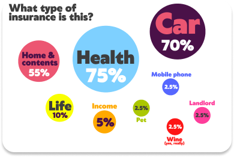

To begin, we needed to learn more about our client, the Insurance Market and Parametric Insurance around the world in order to better understand the users and the problems . We did this through Market Research, Competitive and Comparative Analysis and a Survey .
This also helped us to identify any information gaps and prepare for our user interviews.

 
